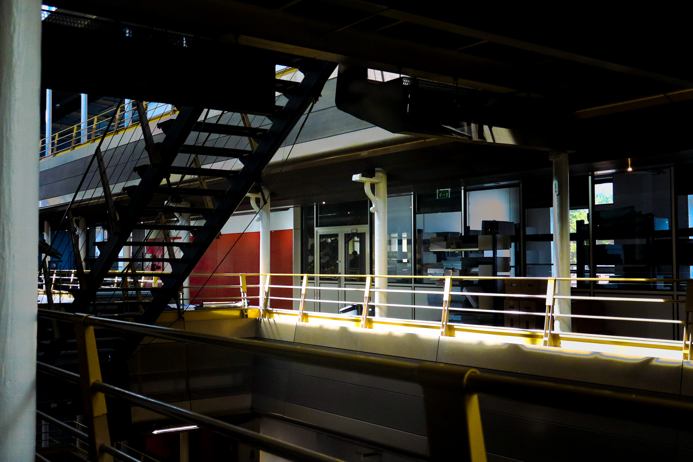

ANMT
Présentation
J’ai repensé l’image des Archives Nationales du Monde du Travail avec un système assez simple : le logo est un cadre qui s’adapte à la forme de l’archive pour la mettre en avant sans la dénaturer. Il fonctionne comme une boîte de conservation qui protège le document, ce qui rappelle directement le métier de l’institution.
Outils
Figma, Illustrator
Contexte
Projet de cours DN MADe
Année
2026
Galerie


